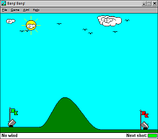

Juegos Win3.1
Son recuerdos de nuestra infancia (por lo menos de la mia). Esos juegos que nos podian divertir sin tanta gráfica y que nos (o me) pasaba horas jugando.
A qué viene esa nostalgia? Además de recordar una época en que cualquier personita no tenía obligaciones aparte de "vivir la vida" y de mi fanatismo de videos juegos viejos (no se por qué), encontré, en mi super búsqueda de mi super juego que no se como se llama pero sé que es uno de los miles clones del Boulder Dash, una página de los juegos para este viejo sistema operativo. Sip, esos jueguitos (sin tener que instalar el DOSBox y correr todo el SO, aunque estaria divertido probarlo) se pueden correr en tu cacharro.
Hay varios bastantes juegos (mas de 500+
1000+) que no solo son de Win 3.1, sino tambien de Win 95. Nostalgia
pura. Entre ellos estan mis preferidos:
Bang! Bang!: se trata de 2 cañoncitos (verde y rojo) que se tienen que destruir o explotar, como quieran. Es por turnos y se tiene que tener en cuenta algunas variables como el viento, ángulo y velocidad añadiendo la dificultad de diferentes tipos de terreno.

Same: típico juego de "destruye 3 o mas X (cubos, bichitos, animales, gelatina...) del mismo color". Se llena la pantalla de cubos de varios colores con letras (unos 4) que se deben eliminar de la forma anteriormente mencionada.
Empipe: otro juego que no puede faltar. Es una versión (y/o tantas versiones) del Dream Pipe, ese que tenes que armar la cañería. Version lite.
Las aventuras del MicroMan: las aventuras de un astronauta/robot(?)-hombre, que tiene un arma y tiene que llegar a una base. De este juego no me acuerdo mucho porque siempre perdía en el mismo nivel :P.
Después estan las diferentes "variantes"/clones de varios juegos (como del Dream Pipe hay 237... mil). Y obviamente no podia faltar el Tetris (y sus clones).
Los invito a pasar a la página y a descargarse algunos juegos para divertirse. Lo mas lindo es que lo pueden llevar en un floppy (bueno, Pendrive, tarjeta de memoria o lo que usen ahora)
El bang bang! Qué recuerdos! También tuve mis momentos de MicroMan. jajaja
Buen post!